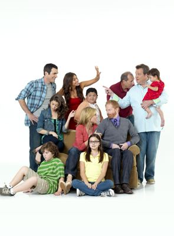
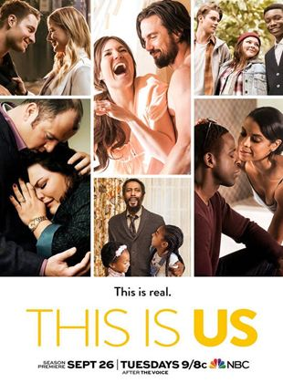
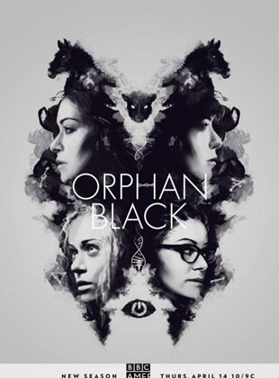
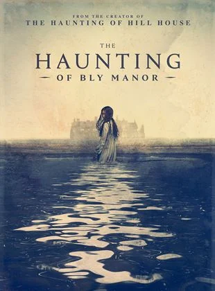
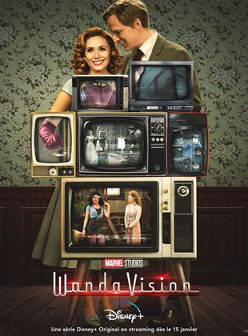
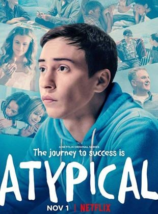

The Last of Us é uma série distópica da HBO baseada na franquia de jogos de videogame de mesmo nome criada por Neil Druckmann. O drama narra um futuro pandêmico que foi devastador para humanidade, deixando os seres humanos à beira da extinção. O vírus transforma pessoas em canibais e se espalha rapidamente com uma simples mordida. Algumas décadas depois, os poucos sobreviventes que restaram vivem viajando ou em quarentenas protegidas por oficiais do governo. Este é o cenário em que acompanhamos Joel, um sobrevivente durão que é contratado para levar a jovem Ellie para fora da zona de quarentena opressiva onde vive. Os dois devem encontrar um grupo de rebeldes paramilitares que se rebelou contra as autoridades. Porém, eles descobrem no caminho que Ellie está possivelmente infectada com o vírus, apesar da jovem não apresentar os sintomas recorrentes da doença. Por conta disso, eles acreditam que a imunidade de Ellie pode ser a chave para encontrar a cura do vírus e potencialmente salvar a humanidade.
Stranger Things
Situada no início dos anos 1980, Stranger Things se passa na cidade rural fictícia de Hawkins, Indiana. Como fachada, o laboratório da região realizava experimentos científicos para o Departamento de Energia Americano, quando na realidade, os pesquisadores ali investiram em experimentos com o paranormal e o sobrenatural, incluindo o uso de cobaias humanas. Não intencionalmente, eles criaram um portal para uma dimensão alternativa conhecida como Mundo Invertido, o que iria impactar a vida dos residentes da pequena cidade. Em 1983, quando Will Byers, um menino de 12 anos, desaparece misteriosamente, o xerife Jim Hopper inicia uma operação para encontrá-lo. Enquanto isso, Mike, Dustin e Lucas, melhores amigos de Will, decidem procurá-lo por conta própria. Mas as investigações acabam levando o grupo em direção aos experimentos secretos do governo e a Eleven, uma peculiar menina perdida na floresta. Assim como as crianças, a mãe Joyce Byers está determinada e fará o impossível para rever o filho.
Modern Family

O dia a dia de três famílias ligadas entre si. Jay Pritchett (Ed O'Neill) é um homem mais velho que se casa com a latina Glória (Sofía Vergara), muitos anos mais nova que ele. Os dois moram com o filho dela, Manny (Rico Rodriguez), e convivem diariamente com os filhos do primeiro casamento de Jay: Caire (Julie Bowen) e Mitchell (Jesse Tyler Ferguson). Ela é uma dona de casa casada com o corretor de imóveis Phil Dunphy (Ty Burrell) e que luta para dar a melhor educação para os filhos Haley (Sarah Hyland), Alex (Ariel Winter) e Luke (Nolan Gould). Já Mitchell vive um relacionamento com Cameron Tucker (Eric Stonestreet), que tem como fruto a filha adotiva Lily (Aubrey Anderson-Emmons).
This is Us

This is Us, série dramática criada por Dan Fogelman, acompanha o cotidiano da família Pearson durante várias linhas do tempo diferentes. Depois da morte de um dos seus trigêmeos durante o parte, o casal Rebecca (Mandy Moore) e Jack (Milo Ventimiglia) decidem adotar um recém nascido que acabara de ser resgatado pelos bombeiros. Durante os episódios, a série apresenta os problemas e dilemas dos Pearsons enquanto uma família e também a vida particular de seus filhos depois de adultos: Randall (Sterling K. Brown) um advogado lidando com a volta de seu pai biológico, Kevin (Justin Hartley), um belo ator de televisão buscando novas oportunidades no teatro e Kate (Chrissy Metz), uma mulher tentando lidar com seu peso e superar traumas da infância.
Orphan Black

Depois de presenciar o suicídio de uma mulher (que é exatamente como ela) em uma estação de trem, Sarah Manning (Tatiana Maslany) faz o que qualquer um faria: assume a identidade da suicida para tentar resolver os próprios problemas financeiros. Mas logo ela descobre que está no centro de um mistério que vai mudar sua vida, quando se vê cara a cara com mais três mulheres idênticas a ela. Todas são clones, e precisam salvar as próprias peles enquanto tentam descobrir quem são os responsáveis pelos experimentos genéticos.
Bly Manor

Segunda temporada da série antológica "A Maldição", criada por Mike Flanagan para a Netflix, que teve A Maldição da Residência Hill como a primeira temporada.
Em A Maldição da Mansão Bly, a jovem Dani Clayton (Victoria Pedretti) é contratada por Henry Wingrave (Henry Thomas) para trabalhar numa enorme e antiga mansão, cuidando de seus dois sobrinhos órfãos. Mas tudo se complica quando os irmãos Flora (Amelie Bea Smith) e Miles (Benjamin Evan Ainsworth) começam a apresentar um comportamento estranho. A história se passa na Inglaterra de 1987 e é inspirada no conto "A Volta do Parafuso".
WandaVision

Após os eventos de Vingadores: Ultimato (2019), Wanda Maximoff/Feiticeira Escarlate (Elizabeth Olsen) e Visão (Paul Bettany) se esforçam para levar uma vida normal no subúrbio e esconder seus poderes. Mas a dupla de super-heróis logo começa a suspeitar que nem tudo está tão certo assim. Eles se encontram, na verdade, dentro de uma constante sitcom, que vai desde a década de 50 até os dias de hoje. Conforme o tempo passa, Wanda e Visão perdem o controle da situação, sem saber mais o que é real e o que é ficção. Eles ficam presos em um eterno vai e vem: da Era de Ouro da TV nos EUA, com imagens em preto e branco, ao presente - e vice-versa.
Euphoria
Em Euphoria, Rue Bennett (Zendaya) é uma jovem de 17 anos que acaba de sair da clínica de reabilitação após ter uma overdose. Rue sofre com transtornos mentais desde criança, o que a fez entrar em contato com drogas ainda no início da adolescência. Ela tenta agora se adaptar a uma vida "limpa" e volta a frequentar a escola. Mas, assim como ela, os demais alunos do ensino médio enfrentam seus próprios desafios, envolvendo sexo, drogas, amizades, relacionamentos amorosos, conflitos familiares, redes sociais e violência. À medida que luta contra a dependência química, Rue precisa lidar com todos os traumas e segredos da adolescência. Ela encontra apoio em uma nova amiga, Jules (Hunter Schafer), uma adolescente transgênero que acabou de se mudar para a cidade
Atypical

Em Atypical, Sam Gardner (Keir Gilchrist) é um jovem autista de 18 anos que está em busca de sua própria independência – começando por arrumar uma namorada. Nesta jornada repleta de desafios, mas que rende algumas boas risadas, ele e sua família aprendem a lidar com as dificuldades da vida e descobrem que o significado de "ser um pessoa normal" não é tão óbvio assim.
Breaking Bad
Walter White (Bryan Cranston) é um professor de química na casa dos 50 anos que trabalha em uma escola secundária no Novo México. Para atender às necessidades de Skyler (Anna Gunn), sua esposa grávida, e Walt Junior (RJ Mitte), seu filho deficiente físico, ele tem que trabalhar duplamente. Sua vida fica ainda mais complicada quando descobre que está sofrendo de um câncer de pulmão incurável. Para aumentar rapidamente a quantidade de dinheiro que deixaria para sua família após sua morte, Walter usa seu conhecimento de química para fazer e vender metanfetamina, uma droga sintética. Ele conta com a ajuda do ex-aluno e pequeno traficante Jesse (Aaron Paul) e enfrenta vários desafios, incluindo o fato de seu concunhado ser um importante nome dentro da Agência Anti-Drogas da região.